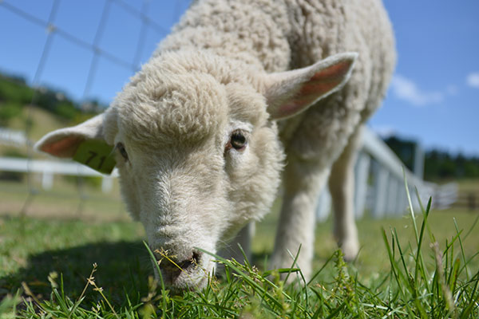
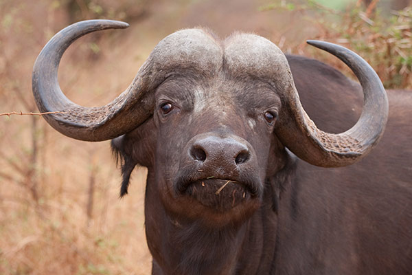

うさぎ

全身が柔らかい体毛で覆われている小型獣である。最大種はヤブノウサギで体長 50–76 cm。
キツネ

食性は肉食に近い雑食性。鳥、ウサギ、齧歯類などの小動物や昆虫を食べる。
ライオン

オスであれば体重は250キログラムを超えることもあり、ネコ科ではトラに次いで2番目に大きな種である。
ヒツジ
反芻動物としては比較的体は小さく、側頭部のらせん形の角と、羊毛と呼ばれる縮れた毛をもつ。原始的な品種では、短い尾など、野生種の特徴を残すものもある。
水牛
粗末な食べ物で成長して肉や乳を得られるだけでなく、ウシよりも沼地での行動に適応しているため水田での労働力としても有用であり、経済的に非常に優れた動物である。
チーター
草原、半砂漠、藪地などに生息する。地表棲だが、樹上に登ることもある。昼行性。単独で生活するが、母親とその幼獣・血縁関係のある個体（兄弟など）では小規模な群れを形成することがある。
ナマケモノ

そのゆっくりとした動作から「怠け者」という呼び名がついた。英語名の Sloth も同じく、怠惰やものぐさを意味する。体長は約41-74センチメートル。
カワウソ

肉食性であり、ザリガニ、カエル、魚などを捕まえて食べる。小臼歯が良く発達しているため、骨まで砕いて食べてしまう。